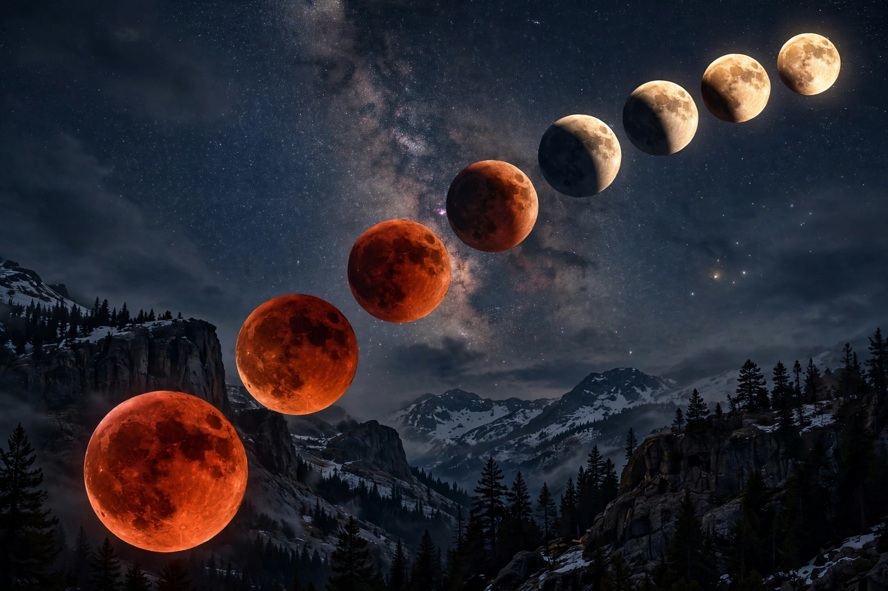

A lunar eclipse is an astronomical event that occurs when the Moon moves into the Earth's shadow, causing the Moon to be darkened. It can occur only at full moon, when Sun, Earth and Moon are aligned (in syzygy) with Earth between the other two.
In a total lunar eclipse, the whole Moon passes through Earth's umbra and may appear red — a 'blood moon' — because sunlight refracted through Earth's atmosphere scatters blue light and bends red light onto the Moon. A partial eclipse covers only part of the Moon with the umbra; a penumbral eclipse passes only through the faint outer shadow and is subtle.
Totality can last up to about 107 minutes, and the whole event several hours. Unlike a solar eclipse, a lunar eclipse is visible from anywhere on Earth's night side. There are roughly two to five lunar eclipses per year. Their recurrence follows the saros cycle of about 18 years.
Eclipses featured in many mythologies as omens; Christopher Columbus famously used knowledge of a 1504 lunar eclipse to impress the Indigenous people of Jamaica.